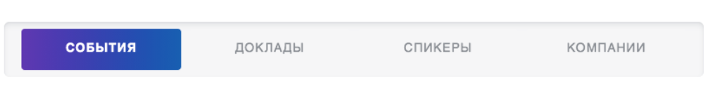
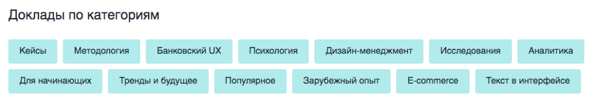

Всем привет, меня зовут Александра Постовалова, и я основатель сообщества
UX Club и организатор онлайн-конференции
UX-марафон.
Рада приветствовать вас на
первой в России платформе для UX-специалистов – тех, кто делает удобные и понятные цифровые продукты!
Прошло уже пять лет с первого выпуска онлайн-конференции UX-Марафон, и мы держим темп – каждые три месяца выходит
новая онлайн-конференция. Мы разобрали более 20 тем, пригласив 100+ спикеров из различных компаний,
свыше 5000 человек стали участниками событий.
13 ноября 2020 года, во Всемирный день юзабилити, наша команда запустила свой собственный ресурс –
ux-marafon.ru.
Мы создали платформу, которая формирует совершенно другой пользовательский опыт. В одном месте можно купить билет,
посмотреть трансляцию, получить сертификат на двух языках и доступ к видеозаписям события, презентациям и материалам.
И самое главное: мы собрали все видео с прошлых UX-Марафонов и разместили их на платформе, рассортировав по
событиям,
спикерам,
спикерам и
компаниям.

Теперь можно найти ответы на свои профессиональные запросы в докладах спикеров.
Если вам, к примеру, нужно провести юзабилити-тестирование – вы заходите в материалы события
Юзабилити-тестирование
и смотрите для начала
фундаментальную лекцию Дмитрия Сатина.
Затем вы можете углубить свои знания знакомством с
прикладными кейсами коллег по цеху: как они строят исследование, какие сложности могут возникнуть в процессе и т.д.
Так вы собираете информацию, разбираетесь в теме и проводите своё первое юзабилити-тестирование, опираясь на
опыт экспертов.

Вы можете найти доклад по категориям, например:
кейсы,
методология,
психология,
аналитика и
для начинающих, по
имени спикера
или по
названию компании
, которую он представляет.
Пользуйтесь нашей платформой, когда хотите найти ответы на конкретные вопросы или когда хотите повысить свой уровень знаний в UX-cфере, когда получаете проект в новой области или проходите собеседование. Опыт спикеров поможет разобраться с текущими запросами и создаст хороший фундамент для дальнейшего развития.
Вы можете приобрести доступ к одному докладу или ко всему событию. Можно оформить годовую подписку и смотреть безлимитно все представленные на платформе доклады, сейчас их 143. Можно оплатить доступ самостоятельно или прямо на платформе оформить счет и оплатить от имени компании.
Ну и, конечно, не стоит забывать, что каждые три месяца у нас проходят новые UX-марафоны!
Ближайшее событие стартует 27 января, и будет посвящено теме информационной архитектуры.
В этот раз мы решили опробовать новый формат: 3 вечера по 3 доклада. Ставим цель – комплексно подойти к
теме, разобраться с основами, познакомиться с инструментами и методологиями и закрепить полученные знания на кейсах.
Билеты и абонементы на 2021 год уже в продаже.
Подключайтесь к нашему пространству для профессионального роста. Получайте актуальные знания, знакомьтесь с методологиями и инструментами, общайтесь с теми, кто определяет тренды UX-дизайна.
Смотрите
UX-Марафоны и подключайтесь к
чату UX-сообщества.
Развивайтесь с нами!
Спасибо, что дочитали!
Возьмите промокод
2021 и оформите любое видео, событие или подписку с
30% скидкой.